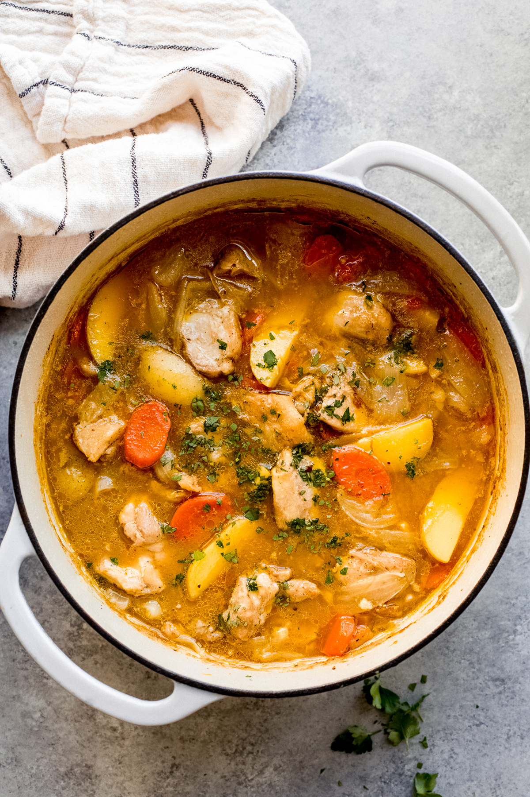

One pot chicken stew

a hearty meal
This chicken stew is hearty, healthy and perfectly warming.
Serve with bread or dig in as it is - this recipe requires the simplest of ingredients.
ingredients
1/2 lbs. chicken thighs, boneless, skinless, cut into 2-inch chunks
2 Tbsp. high smoke oil (i.e. avocado, peanut, canola, sunflower or sesame oil), divided
3 medium carrots, peeled and sliced diagonally into 1/2-inch pieces
1 medium sweet onion, cut into 12 wedges
6 garlic cloves, chopped
5 cups chicken broth or stock, divided
2 Tbsp. all-purpose flour
1 bay leaf
12 oz. baby white potatoes, scrubbed and quartered
1/4 cup fresh chopped parsley
salt and ground black pepper
instructions
- Pat dry the chicken with a few sheets of paper towel and season thoroughly with salt and pepper, to taste.
- Heat 1 tablespoon of oil in a heavy-bottom dutch oven or a soup pot over high heat. When oil is hot, add chicken and cook, stirring occasionally, until brown on all sides, about 5-6 minutes total. The goal here is to simply brown the chicken on the outside and extract some of its flavor. Make sure to use high heat, otherwise, the chicken will steam out and not brown. Transfer to a plate.
- Reduce heat to a medium and add the remaining 1 tablespoon of oil. Add carrots and onions. Cook, stirring often until onions begin to soften and tips turn golden, about 4-5 minutes. Add garlic and cook for about 30 seconds or until fragrant, while stirring nonstop. Add 1/2 cup chicken broth while stirring and scraping to loosen browned bits from the bottom of the dutch oven.
- In a small bowl, whisk together flour and 1/2 cup broth; add to the dutch oven. Stir in chicken and remaining 4 cups of chicken broth. Add bay leaf and season with salt and pepper, to taste. Bring back to a boil, reduce heat to medium-low and simmer for 25 minutes, partially covered.
- Add potatoes and cook uncovered until potatoes are tender, about 18-20 minutes. If needed, increase the heat so the stew is at a gentle simmer. Also taste the broth for salt and pepper and add more if needed. Stir in parsley and discard bay leaf before serving.
back